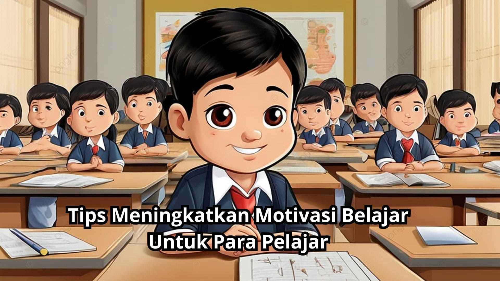

Tips Meningkatkan Motivasi Belajar Untuk Para Pelajar
Belajar di tengah banyaknya tugas kuliah bukan hal yang mudah. Saya mencoba mencari cara agar tetap semangat, seperti membuat to-do list harian dan memberi waktu istirahat di sela belajar.
"Semangat adalah api kecil yang harus dijaga agar tetap menyala."

Sumber referensi: Universitas Stekom
Manajemen Waktu Mahasiswa
Mengelola waktu adalah keterampilan penting yang harus dimiliki mahasiswa. Saya terbiasa menggunakan aplikasi kalender dan teknik Pomodoro untuk menjaga fokus serta membagi waktu antara kuliah, organisasi, dan istirahat.
"Bukan kurang waktu yang menjadi masalah, tapi bagaimana kita mengelolanya."
Sumber referensi: Institut Teknologi Indonesia